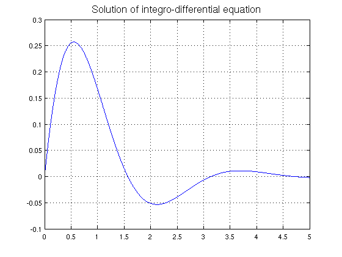

Wikipedia integro-differential equation example
Mark Richardson, 27 September 2010
(Chebfun example integro/WikiIntegroDiff.m)
Here, we solve a first order linear integro-differential equation considered in the Wikipedia article:
http://en.wikipedia.org/wiki/Integro-differential_equation
u'(x) + 2u(x) + 5\int_{0}^{t} u(t) dt = 1, x >= 0
= 0, x < 0
u(0) = 0Begin by defining the domain d, chebfun variable x and operator N.
d = [0 5];
x = chebfun('x',d);
N = chebop(d);
The problem has a single Dirichlet boundary condition at x = 0.
N.lbc = 0;
Define the operator using Chebfun's overloaded DIFF and CUMSUM commands.
N.op = @(u) diff(u) + 2*u + 5*cumsum(u);
Set the RHS of the IDE.
rhs = 1;
Solve the IDE using backslash.
u = N\rhs;
Analytic solution:
u_exact = 0.5*exp(-x).*sin(2*x);
How close is the computed solution to the true solution?
accuracy = norm(u-u_exact)
accuracy =
3.282457072036605e-16
Plot the computed solution
plot(u,'linewidth',1.6), grid on title('Solution of integro-differential equation','fontsize',16)